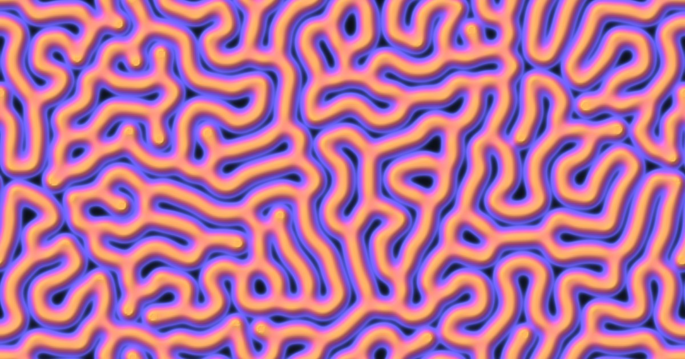

Math Explorer · Growing Patterns
Growing Patterns: Conway's Game of Life, Lenia and reaction–diffusion
Simple rules about neighbours that grow gliders, guns, creatures and the patterns on animals' coats.

Start exploring Growing Patterns →
In Conway's Game of Life each square lives or dies by counting its neighbours, and from that one rule come gliders that crawl, guns that fire them, and patterns that grow forever. Math Explorer runs 20 Life-like rules, including Brian's Brain and Wireworld, with the classic patterns checked by simulation.
Lenia makes the rule smooth, and its patterns move like living creatures. Reaction–diffusion, two chemicals spreading and reacting, grows the spots and stripes Alan Turing proposed for animal coats. Everything runs on your graphics card, you can paint into it with a brush, and every start has a number so you can get it back.
Things to try
- Place a glider gun and watch it fire
- Paint into Lenia and see what survives
- Grow coral, spots or dividing cells by reaction–diffusion
- Try Brian's Brain or Wireworld
- Type a start number to replay a pattern
Start exploring Growing Patterns →